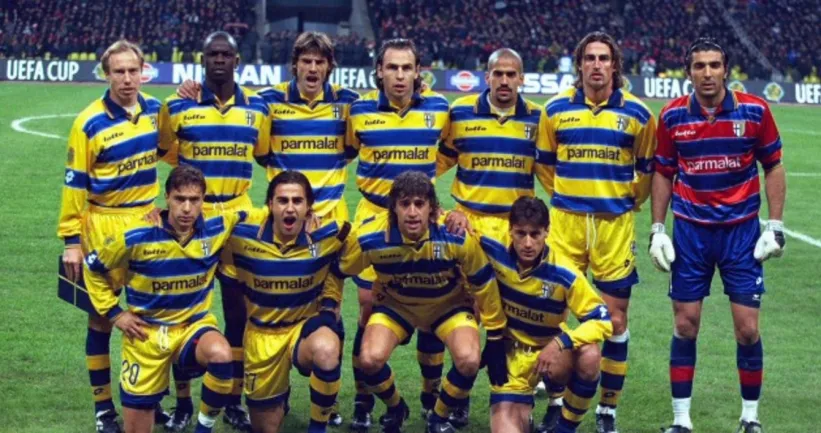
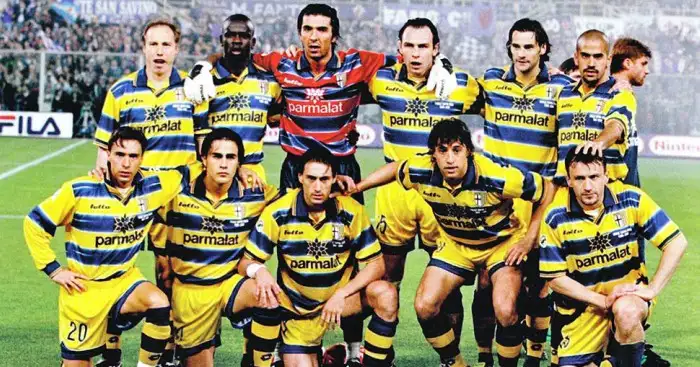

Parma is a small city in Emilia-Romagna, better known for its ham and its cheese than for its football. Until 1990, the club had never played a single season in Serie A. Then, in less than ten years, it became one of the most exciting teams in Europe—and one of the most loved. If you grew up watching football in the 90s, you remember those yellow and blue stripes.
It started with Nevio Scala, who led the team to promotion in 1990, and with money from Parmalat, the dairy giant owned by the Tanzi family. But money alone doesn’t explain it. Parma played with courage. They won the Coppa Italia in 1992, then the Cup Winners’ Cup at Wembley in 1993, then the European Super Cup against Milan. A club that had never been in the top flight was suddenly beating the biggest names on the continent.
And the players. Gianfranco Zola, Faustino Asprilla, Tomas Brolin and Dino Baggio in the early years. Later, Gianluigi Buffon, Lilian Thuram, Fabio Cannavaro, Hernán Crespo, Juan Sebastián Verón and Enrico Chiesa. When people talk about the “Seven Sisters” of Serie A—the seven clubs that could all dream of the title—Parma was the youngest and, for me, the most romantic of them all. They added a UEFA Cup in 1995, beating Juventus in the final.

Their peak came in 1999 under Alberto Malesani. In the UEFA Cup final in Moscow, they beat Marseille 3–0, with goals from Crespo, Vanoli and Chiesa. As someone who follows OM, I’ll admit that one still stings a little. But even I have to recognise it: that night, Parma were simply brilliant. They added the Coppa Italia the same season.
What Parma never did was win Serie A. They came closest in 1997, under a young coach called Carlo Ancelotti, finishing second just behind Juventus. Maybe that is part of their charm. They were never supposed to be at the top table, and they never fully sat down at it. They just kept showing up and making the giants nervous.
The fall was as dramatic as the rise. In 2003, Parmalat collapsed in one of the biggest corporate fraud scandals in European history, and the club lost the foundation it had been built on. The years that followed were a long struggle, ending in bankruptcy in 2015. Parma had to restart in Serie D, the fourth tier. Then, in true underdog fashion, they won three promotions in a row and were back in Serie A by 2018.
That’s why I call them eternal underdogs. Not because they were small, but because no matter how many times football tried to put them back in their place, they found a way to climb out. Some teams win more trophies. Very few leave behind a feeling like that.